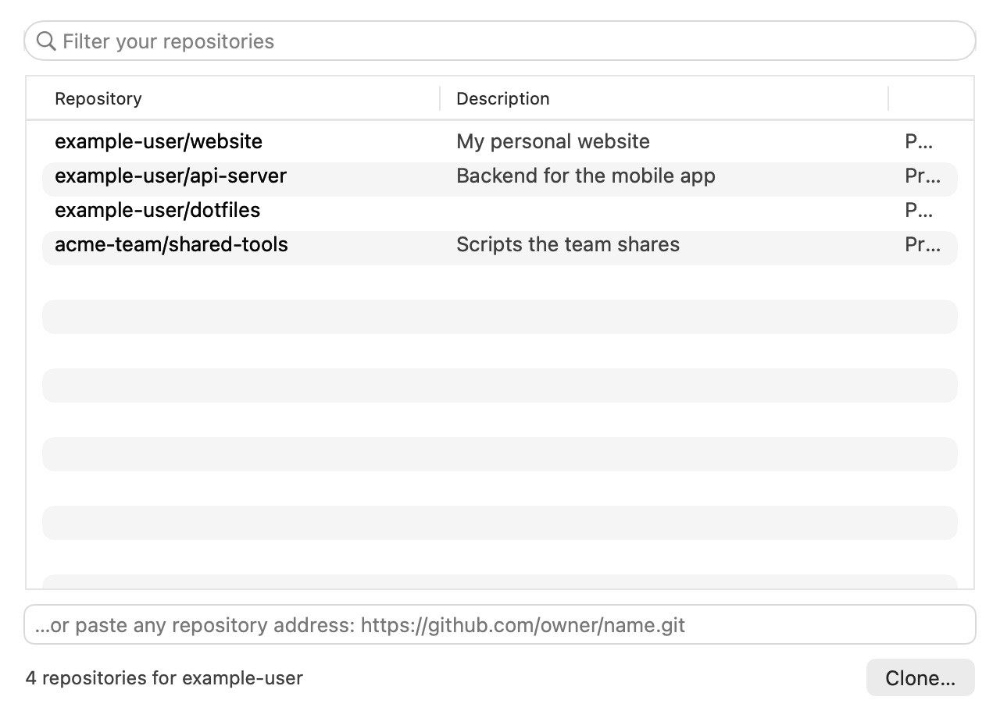

Truly native
Built with Cocoa for macOS, not a web page inside a wrapper. It starts fast, behaves like the rest of your Mac, and the whole app is a download of less than 10 MB.
Version 1.0.0 for macOS
J++ is a fast, native code editor for the Mac. Write in 95 languages, run and debug your code, query your data with SQL, push to GitHub and ask an AI assistant, all in one small app.
For macOS 12 or later · Apple silicon and Intel

Why J++
Most editors start empty and ask you to assemble the rest. J++ starts complete, and it is made for the Mac and nothing else.
Built with Cocoa for macOS, not a web page inside a wrapper. It starts fast, behaves like the rest of your Mac, and the whole app is a download of less than 10 MB.
Run, debug, IntelliSense, SQL, GitHub and AI are part of the app. There is no marketplace to search and no extensions to choose, set up and keep updated.
Run SQL on Databricks, Snowflake, PostgreSQL, MySQL, SQL Server and SQLite. Even an Excel workbook or a CSV file becomes a table you can query.
Connect your own Claude API key, any OpenAI-compatible service, or a model running on your Mac. J++ has no subscription, and your code is sent only when you ask.
No account, no analytics, no advertising, no tracking. Passwords, tokens and API keys are kept in the macOS Keychain.
Liquid Glass on macOS 26, SF Symbols, SF Mono, and light and dark appearances that follow the system. One app for Apple silicon and Intel.
Features
Edit
The editing engine is Scintilla, known for its speed with large files. Around it, J++ adds the tools you use all day.
IntelliSense
Completion as you type, parameter hints, descriptions when the pointer rests on a name, and marks under errors and warnings.

Run and debug
Compile and Run work for every language in the menu. The output appears under your code, and after an error the caret jumps to the line the compiler names.

Databases
Save your connections once, then press ⌘↩ in a SQL tab. The results arrive in a grid you can copy or export as CSV.

AI assistant
Ask a question and the assistant reads the file in front of you and your selection. Insert and Replace Selection put the answer's code into the editor as one undo step.

GitHub
Connect your account and J++ lists your repositories. The status bar shows the branch, what there is to push or pull, and how many files changed.

Everything on this page is in the app the first time you open it.
You never sign in to J++. There is nothing to create.
The AI assistant uses your own key or your own local model.
J++ does not measure you, and sends nothing to its author.
Help ▸ J++ Guide describes each feature step by step, with screenshots in light and dark, and a table of every keyboard shortcut.
J++ 1.0.0 is almost ready. The download will be available on this page.
For macOS 12 or later · Apple silicon and Intel
Compile, Run and Git use Apple's developer tools. Install Xcode, or its command line tools, to use them.